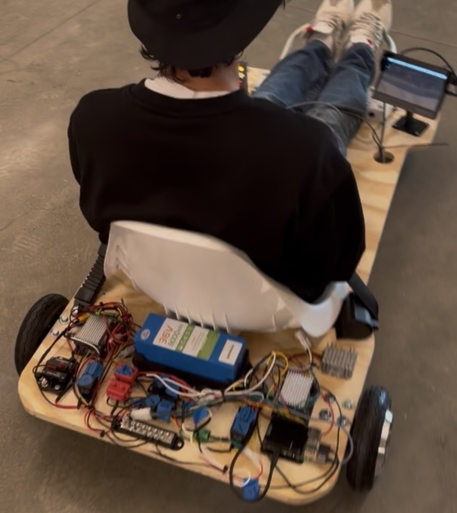

Class Projects
Electric Vehicle Design Lab (E49C)
EV Design Team Project

Overview:
Team project to build an electric vehicle. Principles of EV design, battery technology, vehicle dynamics, fabrication, wiring, and embedded software development.
Skills:
EV Design, Battery Technology, Vehicle Dynamics, Fabrication, Embedded Software
Experimental Engineering (E80)
AUV Ocean Floor SONAR Mapping

Overview:
Designed and created an Autonomous Underwater Vehicle (AUV) to create topography maps of the harbor floor using Time-of-flight measurements via SONAR technology (10W Exciter & Electret Mic). Also analyzed temperature and pressure measurements by diving.
Skills:
Arduino, MATLAB, SONAR, Embedded Systems, PCB Assembly
Digital Electronics / Computer Architecture (E85)
Digital Level

Overview:
Developed an embedded C application to implement a 2D digital level, interfacing a triple-axis accelerometer with a microcontroller to measure tilt along the x and y axes.
Designed and wired a complete hardware system on a breadboard, integrating a RED-V development board, LIS3DH accelerometer, and an 8x8 LED matrix.
Skills:
C/C++, SPI Communication, Calibration, Soldering, Embedded Systems
Multicycle Processor

Overview:
Designed a multicycle RISC-V processor in SystemVerilog, creating a hierarchical architecture with a finite-state machine, datapath, ALU, register file, and unified memory adapted from a single-cycle design.
Validated processor functionality through simulation and waveform analysis.
Skills:
SystemVerilog, HDL, Assembly, RISC-V, Quartus FPGA, Questa
Systems Engineering (E79)
Submersible Robot with Kp Control

Overview:
Constructed an underwater remotely operated vehicle (ROV) to retrieve temperature, pressure, and other signals in lake environments via the MCP9701 thermistor and MPX5700ASX pressure gauge.
Assembled a PCB containing the MCP6002 OpAmp to return output voltages modeled and analyzed in LabVIEW.
Skills:
LabVIEW, Soldering, PCB Assembly, Oscilloscope, DMM, Breadboarding
Engineering Design & Manufacturing (E4)
Digital Logic Demonstration Board

Overview:
Designed and assembled a logic-gate demonstration board using 74HC Series integrated circuits, a 555 timer, and a potentiometer-based clock input.
Engineered intuitive controls with input switches, banana cables, and LEDs to clearly display output states.
Delivered a durable teaching tool now used by Professor Stone for the Digital Logic and Computer Architecture course.
Skills:
Digital Logic, PCB Design, 74HC ICs, 555 Timer, Soldering
E4 Machinist Hammer

Overview:
Manufactured a precision machinist hammer from clear oak, AISI 1015 steel, AISI 4340 steel, and nylon, adhering to detailed engineering drawings, dimensional tolerances, and safety requirements.
Applied turning, facing, milling, tapping, and heat treatment processes to achieve specified mechanical properties.
Skills:
GD&T, Lathe, Mill, Bandsaw, Taps, Digital Micrometers, HRC Hardness Tester, Heat Treatment